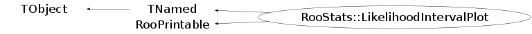

class RooStats::LikelihoodIntervalPlot: public TNamed, public RooPrintable
LikelihoodIntervalPlot : This class provides simple and straightforward utilities to plot a LikelihoodInterval object.
Function Members (Methods)
public:
| virtual | ~LikelihoodIntervalPlot() |
| void | TObject::AbstractMethod(const char* method) const |
| virtual void | TObject::AppendPad(Option_t* option = "") |
| virtual void | TObject::Browse(TBrowser* b) |
| static TClass* | Class() |
| virtual const char* | TObject::ClassName() const |
| virtual void | TNamed::Clear(Option_t* option = "") |
| virtual TObject* | TNamed::Clone(const char* newname = "") const |
| virtual Int_t | TNamed::Compare(const TObject* obj) const |
| virtual void | TNamed::Copy(TObject& named) const |
| virtual Int_t | RooPrintable::defaultPrintContents(Option_t* opt) const |
| static ostream& | RooPrintable::defaultPrintStream(ostream* os = 0) |
| virtual RooPrintable::StyleOption | RooPrintable::defaultPrintStyle(Option_t* opt) const |
| virtual void | TObject::Delete(Option_t* option = "")MENU |
| virtual Int_t | TObject::DistancetoPrimitive(Int_t px, Int_t py) |
| virtual void | Draw(Option_t* options = 0) |
| virtual void | TObject::DrawClass() constMENU |
| virtual TObject* | TObject::DrawClone(Option_t* option = "") constMENU |
| virtual void | TObject::Dump() constMENU |
| virtual void | TObject::Error(const char* method, const char* msgfmt) const |
| virtual void | TObject::Execute(const char* method, const char* params, Int_t* error = 0) |
| virtual void | TObject::Execute(TMethod* method, TObjArray* params, Int_t* error = 0) |
| virtual void | TObject::ExecuteEvent(Int_t event, Int_t px, Int_t py) |
| virtual void | TObject::Fatal(const char* method, const char* msgfmt) const |
| virtual void | TNamed::FillBuffer(char*& buffer) |
| virtual TObject* | TObject::FindObject(const char* name) const |
| virtual TObject* | TObject::FindObject(const TObject* obj) const |
| virtual Option_t* | TObject::GetDrawOption() const |
| static Long_t | TObject::GetDtorOnly() |
| virtual const char* | TObject::GetIconName() const |
| virtual const char* | TNamed::GetName() const |
| virtual char* | TObject::GetObjectInfo(Int_t px, Int_t py) const |
| static Bool_t | TObject::GetObjectStat() |
| virtual Option_t* | TObject::GetOption() const |
| virtual const char* | TNamed::GetTitle() const |
| virtual UInt_t | TObject::GetUniqueID() const |
| virtual Bool_t | TObject::HandleTimer(TTimer* timer) |
| virtual ULong_t | TNamed::Hash() const |
| virtual void | TObject::Info(const char* method, const char* msgfmt) const |
| virtual Bool_t | TObject::InheritsFrom(const char* classname) const |
| virtual Bool_t | TObject::InheritsFrom(const TClass* cl) const |
| virtual void | TObject::Inspect() constMENU |
| void | TObject::InvertBit(UInt_t f) |
| virtual TClass* | IsA() const |
| virtual Bool_t | TObject::IsEqual(const TObject* obj) const |
| virtual Bool_t | TObject::IsFolder() const |
| Bool_t | TObject::IsOnHeap() const |
| virtual Bool_t | TNamed::IsSortable() const |
| Bool_t | TObject::IsZombie() const |
| RooStats::LikelihoodIntervalPlot | LikelihoodIntervalPlot() |
| RooStats::LikelihoodIntervalPlot | LikelihoodIntervalPlot(RooStats::LikelihoodInterval* theInterval) |
| RooStats::LikelihoodIntervalPlot | LikelihoodIntervalPlot(const RooStats::LikelihoodIntervalPlot&) |
| virtual void | TNamed::ls(Option_t* option = "") const |
| void | TObject::MayNotUse(const char* method) const |
| static void | RooPrintable::nameFieldLength(Int_t newLen) |
| virtual Bool_t | TObject::Notify() |
| void | TObject::Obsolete(const char* method, const char* asOfVers, const char* removedFromVers) const |
| static void | TObject::operator delete(void* ptr) |
| static void | TObject::operator delete(void* ptr, void* vp) |
| static void | TObject::operator delete[](void* ptr) |
| static void | TObject::operator delete[](void* ptr, void* vp) |
| void* | TObject::operator new(size_t sz) |
| void* | TObject::operator new(size_t sz, void* vp) |
| void* | TObject::operator new[](size_t sz) |
| void* | TObject::operator new[](size_t sz, void* vp) |
| RooStats::LikelihoodIntervalPlot& | operator=(const RooStats::LikelihoodIntervalPlot&) |
| virtual void | TObject::Paint(Option_t* option = "") |
| virtual void | TObject::Pop() |
| virtual void | TNamed::Print(Option_t* option = "") const |
| virtual void | RooPrintable::printAddress(ostream& os) const |
| virtual void | RooPrintable::printArgs(ostream& os) const |
| virtual void | RooPrintable::printClassName(ostream& os) const |
| virtual void | RooPrintable::printExtras(ostream& os) const |
| virtual void | RooPrintable::printMultiline(ostream& os, Int_t contents, Bool_t verbose = kFALSE, TString indent = "") const |
| virtual void | RooPrintable::printName(ostream& os) const |
| virtual void | RooPrintable::printStream(ostream& os, Int_t contents, RooPrintable::StyleOption style, TString indent = "") const |
| virtual void | RooPrintable::printTitle(ostream& os) const |
| virtual void | RooPrintable::printTree(ostream& os, TString indent = "") const |
| virtual void | RooPrintable::printValue(ostream& os) const |
| virtual Int_t | TObject::Read(const char* name) |
| virtual void | TObject::RecursiveRemove(TObject* obj) |
| void | TObject::ResetBit(UInt_t f) |
| virtual void | TObject::SaveAs(const char* filename = "", Option_t* option = "") constMENU |
| virtual void | TObject::SavePrimitive(ostream& out, Option_t* option = "") |
| void | TObject::SetBit(UInt_t f) |
| void | TObject::SetBit(UInt_t f, Bool_t set) |
| void | SetContourColor(const Color_t color) |
| virtual void | TObject::SetDrawOption(Option_t* option = "")MENU |
| static void | TObject::SetDtorOnly(void* obj) |
| void | SetLikelihoodInterval(RooStats::LikelihoodInterval* theInterval) |
| void | SetLineColor(const Color_t color) |
| void | SetMaximum(const Double_t theMaximum) |
| virtual void | TNamed::SetName(const char* name)MENU |
| virtual void | TNamed::SetNameTitle(const char* name, const char* title) |
| void | SetNPoints(Int_t np) |
| static void | TObject::SetObjectStat(Bool_t stat) |
| void | SetPlotParameters(const RooArgSet* params) |
| void | SetPrecision(double eps) |
| void | SetRange(double x1, double x2) |
| void | SetRange(double x1, double y1, double x2, double y2) |
| virtual void | TNamed::SetTitle(const char* title = "")MENU |
| virtual void | TObject::SetUniqueID(UInt_t uid) |
| virtual void | ShowMembers(TMemberInspector& insp) |
| virtual Int_t | TNamed::Sizeof() const |
| virtual void | Streamer(TBuffer& b) |
| void | StreamerNVirtual(TBuffer& b) |
| virtual void | TObject::SysError(const char* method, const char* msgfmt) const |
| Bool_t | TObject::TestBit(UInt_t f) const |
| Int_t | TObject::TestBits(UInt_t f) const |
| virtual void | TObject::UseCurrentStyle() |
| virtual void | TObject::Warning(const char* method, const char* msgfmt) const |
| virtual Int_t | TObject::Write(const char* name = 0, Int_t option = 0, Int_t bufsize = 0) |
| virtual Int_t | TObject::Write(const char* name = 0, Int_t option = 0, Int_t bufsize = 0) const |
protected:
| virtual void | TObject::DoError(int level, const char* location, const char* fmt, va_list va) const |
| void | TObject::MakeZombie() |
Data Members
public:
| enum TObject::EStatusBits { | kCanDelete | |
| kMustCleanup | ||
| kObjInCanvas | ||
| kIsReferenced | ||
| kHasUUID | ||
| kCannotPick | ||
| kNoContextMenu | ||
| kInvalidObject | ||
| }; | ||
| enum TObject::[unnamed] { | kIsOnHeap | |
| kNotDeleted | ||
| kZombie | ||
| kBitMask | ||
| kSingleKey | ||
| kOverwrite | ||
| kWriteDelete | ||
| }; | ||
| enum RooPrintable::ContentsOption { | kName | |
| kClassName | ||
| kValue | ||
| kArgs | ||
| kExtras | ||
| kAddress | ||
| kTitle | ||
| kCollectionHeader | ||
| }; | ||
| enum RooPrintable::StyleOption { | kInline | |
| kSingleLine | ||
| kStandard | ||
| kVerbose | ||
| kTreeStructure | ||
| }; |
protected:
| static Int_t | RooPrintable::_nameLength | |
| TString | TNamed::fName | object identifier |
| TString | TNamed::fTitle | object title |
private:
| Int_t | fColor | |
| Int_t | fFillStyle | |
| RooStats::LikelihoodInterval* | fInterval | |
| Int_t | fLineColor | |
| Double_t | fMaximum | function maximum |
| Int_t | fNPoints | number of points used to scan the PL |
| Int_t | fNdimPlot | |
| RooArgSet* | fParamsPlot | |
| Double_t | fPrecision | RooCurve precision |
| Double_t | fXmax | |
| Double_t | fXmin | |
| Double_t | fYmax | |
| Double_t | fYmin |
Class Charts
{kind=link}
{kind=link}
{kind=link}
{kind=link}

Function documentation
void SetLikelihoodInterval(RooStats::LikelihoodInterval* theInterval)
void SetPlotParameters(const RooArgSet* params)
void Draw(Option_t* options = 0)
draw the Likelihood interval or contour plot For 1D problem draw the log profile likelihood function ratio and its interval The curve is draws in a RooPLot by default (i.e as a RooCurve) The plotting range (default is the full parameter range) and the precision of the RooCurve can be specified by using SetRange(x1,x2) and SetPrecision(eps). SetNPoints(npoints) can also be used (default is npoints=100) Optionally the function can be drawn as a TF1 (option="tf1") obtained by sampling the npoints For 2D case, a contour is drawn. The number of contour points is controlled by SetNPoints(npoints) (default is npoints=40) In case of problems finding the contour with Minuit, the option "nominuit" can be used. In this case the profile likelihood function is sampled in the npoints x npoints values and then an approximate contour is obtained.